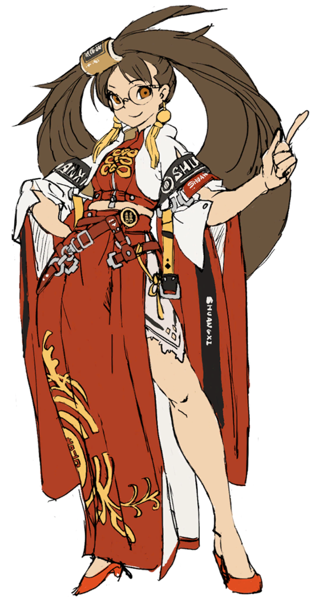

잼
내일은 모레 있을 면담 준비 때문에 바쁠 테지만, 오늘 정도는 새롭게 바뀐 길티기어를 누려도 괜찮을 것 같다. 이번 패치에서는 비정상적으로 공격 측이 유리했던 부분들이 상당부분 개선되었으며, 게임의 불쾌감이 많이 낮아졌다. 아직 패치노트를 제대로 읽어보지는 않았지만, 인터넷을 보면 대체적으로 "역대급으로 성공적인 업데이트"라는 평이 많이 보인다.
오늘은 하루종일 길티기어를 플레이했다. 시즌 1부터 2까지의 주캐인 지오바나나, 그 이후부터의 주캐인 안지도 플레이해보고 싶지만, 옛날부터 스트라이브로의 참전을 기대했었던 쿠라도베리 잼이 드디어 추가되었기 때문에, 오늘은 오직 잼으로만 플레이했다.
잼은 디자인적으로나 플레이스타일적으로나 모든 부분에서 기대 이상이었다. 익저드의 잼은 플레이스타일 자체는 재미있었지만 의상이 너무 부담스러웠는데, 스트라이브로 넘어오면서 의상도 정상화가 되었고, 무엇보다 새롭게 추가된 우사기(토끼)가 매우 귀엽다.
예쁘다.
 귀엽다.
귀엽다.
플레이스타일도 아주 재미있다. 이상적인 이지 투 런 하드 투 마스터의 모습을 하고 있고, 성능도 준수한 편인 것 같다. 길티기어 스트라이브 2.0은 매우 성공적으로 느껴진다. 게임 중독이 될 것 같아서 무서울 정도다.
 かわいい。
かわいい。